Fedora Badges: Federated badges for freedom.
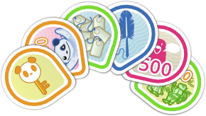David Gay
- https://github.com/oddshocks
- https://twitter.com/oddshocks
- http://oddshocks.com
- 2048R/7B478256 2013-04-20
Ralph Bean
- https://github.com/ralphbean
- https://twitter.com/ralphbean
- http://threebean.org
- 2048R/971095FF 2012-12-06
You can find us in #rit-foss on irc.freenode.net.

David Gay
- Humanitarian free software hacker.
- RIT Lab for Technological Literacy, or "the FOSSBox".
- Red Hat intern on the Fedora Infrastructure Team.
Ralph Bean
- Red Hat senior software engineer on the Fedora Infrastructure Team.
- RIT alumni.
- All-around lover of pizza.
Fedora Badges isn't gamification, it's a recognition system.
It recognizes participation and contributions to Fedora by awarding virtual badges.
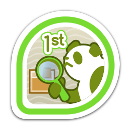We want Fedora contributors to earn badges.
Award topics include:
- FAS membership and group membership (like sponsors).
- Ask Fedora activity, Tagger activity, and Fedora Wiki edits.
- IRC meetings and Fedora Planet posts.
- Bodhi updates (testing and stable), tests, and karma.
- Koji builds and commits to Fedora package repositories.
- Community-awarded badges.
- Event attendance... like Flock 2013. :)
Mozilla Open Badges was launched in September 2011 to issue digital badges to recognize skills and achievements.
The Open Badges Infrastructure (OBI) defines a badge as a JSON blob containing some metadata at a particular URL. The JSON can also be baked-in to the PNG.
A badge is:
- a title.
- a description.
- an image.
- a link to badge criteria.
Badges are awarded by creating an assertion.
Assertions associate a badge with an email address.
Assertions are JSON blobs which live at cryptic web addresses. The validity of a badge award can be checked by confirming that an appropriate JSON blob lives at the URL for that assertion.
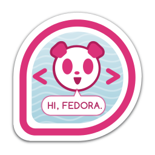Anyone can issue Open Badges.
Already awarding badges:
- NASA
- Disney-Pixar
- 4H
- DigitalMe
- TotaraLMS
- Moodle
Mozilla claims that PBS, P2PU, Intel, and the US Department of Education are soon to follow.
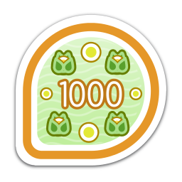Badges from all sources can be exported to your Mozilla Backpack at http://beta.openbadges.org and displayed all over the web.
Backpacks are decentralized. Fedora Badges is technically a backpack. Badges can be exported between any backpack. Mozilla's service is simply the original one. It provides a clean interface and useful widgets for displaying your badges on a website.
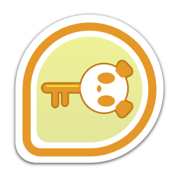The Stack
Fedora Badges makes use of 5 core pieces of Fedora infrastructure software.
GitHub organization: https://github.com/fedora-infra/
- Fedmsg: The FEDerated MeSsaGe Bus
- Datanommer
- Fedbadges
- Tahrir-API
- Tahrir
Fedmsg is Ralph's message bus for hooking together activity in all areas of Fedora-land.
Fedmsg emits a message whenever something happens on a Fedora service.
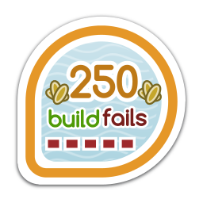Datanommer consumes messages from Fedmsg and stores them in a database.
Every time Fedmsg emits a message that may result in someone earning a badge, Fedora Badges checks Datanommer to see if they have met the criteria for the badge.
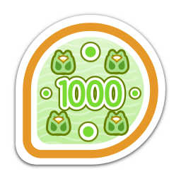Fedbadges hooks Tahrir, Tahrir-API, and Tahrir-REST into fedmsg.
Fedbadges also contains badge criteria in the form of YAML files located in our git repo:
http://infrastructure.fedoraproject.org/infra/badges/rules/
These YAML files define the badges in the system and say what triggers the badge award.
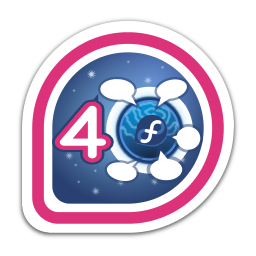Tahrir-API provides the database model for Fedora Badges, as well as a high-level TahrirDatabase class for easily interacting with the database.
It makes use of the SQLAlchemy object-relational mapper.
Tahrir is the web application where people can go to view their badges, explore Fedora Badges, and see how they compare to other Fedora contributors.
It is a Pyramid web application powered by Python and righteous freedom.
Development of Tahrir and Tahrir-API was the focus of my internship this summer.
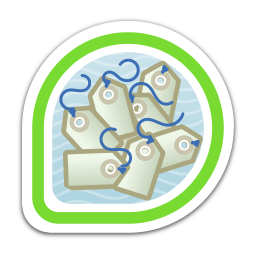All of these tools are system-agnostic, which means that they can be used outside of Fedora, too.
Anyone can deploy their own Tahrir!
The OpenID provider is entirely configurable.
In the future, we hope to make the authentication system fully pluggable and make the web application's theming easily customizable.
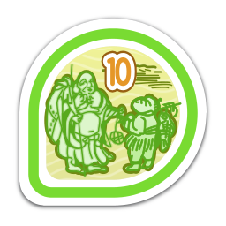We don't want to keep badges to contributors.
In the future, regular Fedora users will be able to earn badges during their use of the operating system.
Desktop notifications can tell you when you've earned a badge, and clicking them can take you to the Badges web interface.
Users will be able to offer their own community badges to others, like the "You made <user>'s day!" badge.
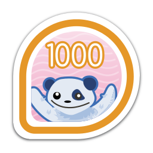Of course, we've only created a small portion of the badges that we hope will exist by this time next year.
Still unanswered is the question of how new badges will be added to the system. Possibilities include:
- Using a pull request system and a git repo.
- This is probably more technical than we want.
- A web form that submits to a "badge committee".
- This is probably more closed than we want.
- A review system similar to our package reviews and Bodhi karma system.
- This is -- in our opinion -- the most attractive option.
A fedorahosted tracker has been set up for this purpose at https://fedorahosted.org/fedora-badges.
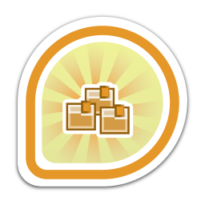Acknowledgements
- Ralph Bean and Remy DeCausemaker, mentors and friends
- Tom 'spot' Callaway, manager
- Máirín Duffy and Jenn Kotler, pixel ninjas
- The rest of the Fedora infrastructure team
- All of Fedora's contributors
- My fellow FOSSBoxers
- Richard Stallman for freedom, Linus Torvalds for Linux and Git, Bram Moolenaar for Vim, Nicholas Marriott for Tmux, Jarkko Oikarinen for IRC, Chris McDonough for Pyramid, Mike Bayer for SQLAlchemy, Lennart Regebro for Hovercraft, Mozilla for the OBI, and many more
- Science